Окрас
Малыши эублефаров могут быть и в крапинку и полоску и "чистенькие ", но со временем они взрослеют и меняют свой цвет. Примерно в 1-1,5 года эублефары "перецветают" и получают свой постоянный цвет и раскраску, конечно оттенки зависят от здоровья, периода линьки, настроения и многих факторов, когда болеют расцветка более тусклая, а если им хорошо то более выражена и ярче.
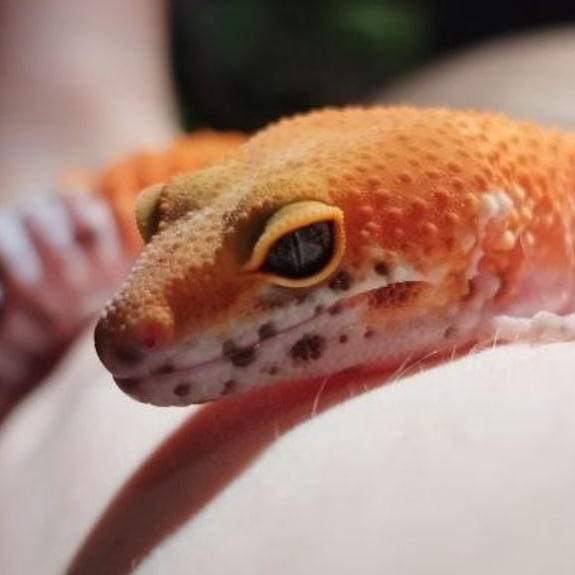
Возраст ~4/5 месяцев
Такая маленькая. На мордочке было очень много белого цвета и много черных пятнышек, что менялись с возрастом, перемещались и пропадали.
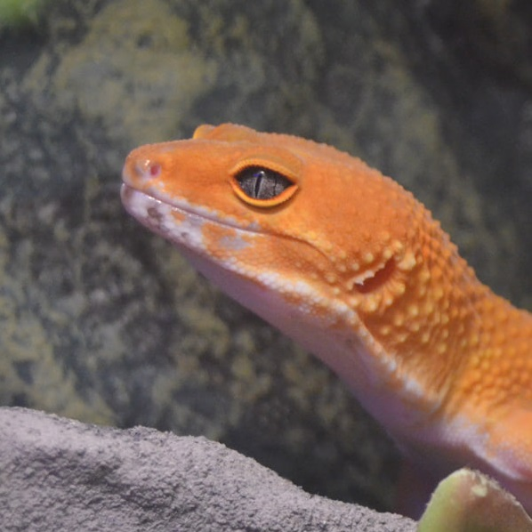
Возраст ~11/12 месяцев
Белого на мордочке стало меньше, черные точки почти что пропали. Преобладает рыжий цвет, что заменил большую часть белого.
Большой дом "Оазис"
-
Фото 1
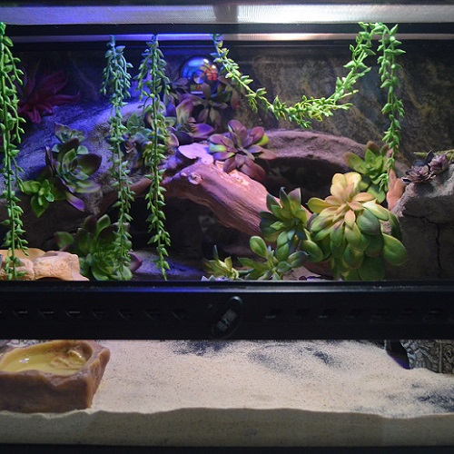
Вид спереди - красивый ландшат
-
Фото 2
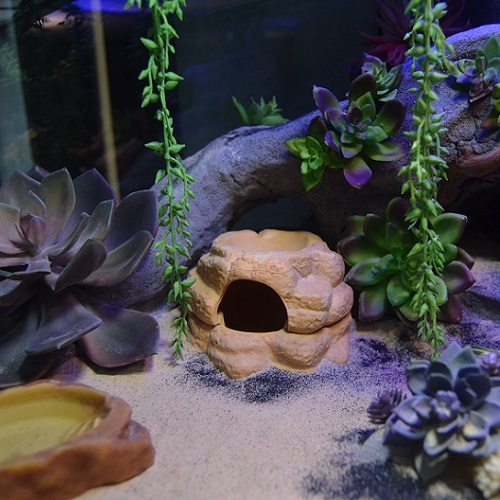
Прохладная зона - влажная камера и поилка
-
Фото 3
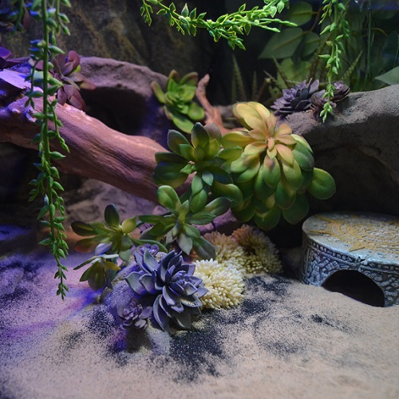
Теплая зона среди цветов
-
Фото 4
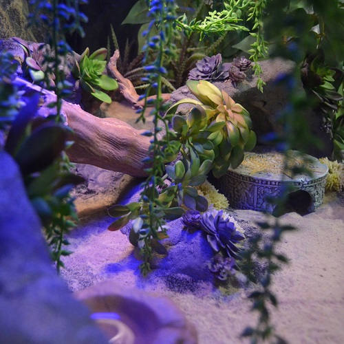
Ландшафт - вид слева
-
Фото 5
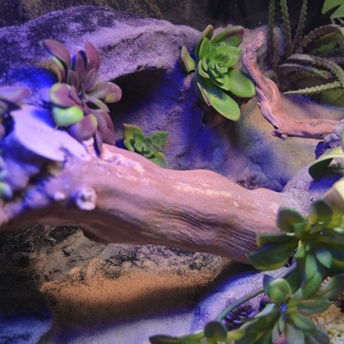
Мостик из коряги
-
Фото 6
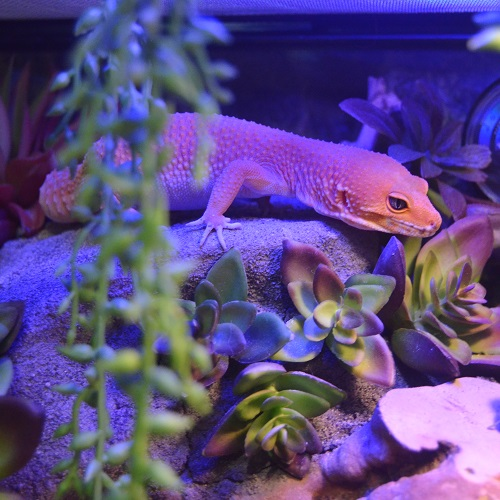
Игнис - "Опять снимаешь?"
Маленький дом (дача) "Где-то в Мексике"
-
Фото 1
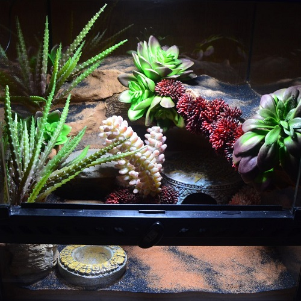
Общий вид на ландшафт
-
Фото 2
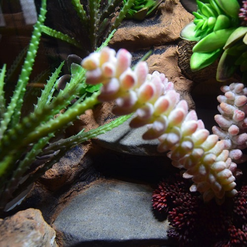
Лесенка и знаменитый суккулент
-
Фото 3
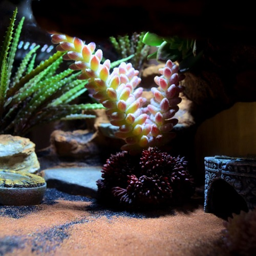
Первый этаж
-
Фото 4
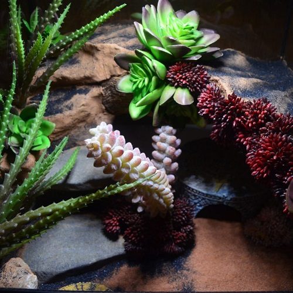
Подъем на второй этаж дачи
-
Фото 5
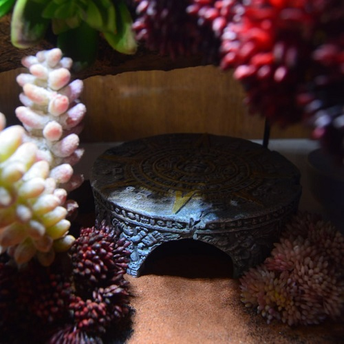
Спальня для огненной эушки
-
Фото 6
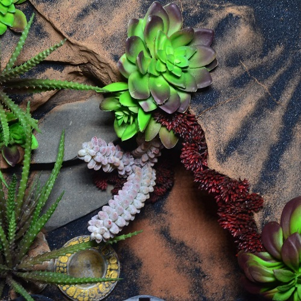
Вид сверху
-
Фото 7
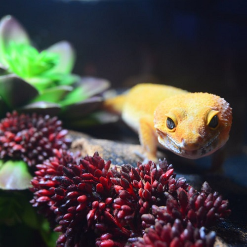
Девочка осваивается (не довольна размером дачи)